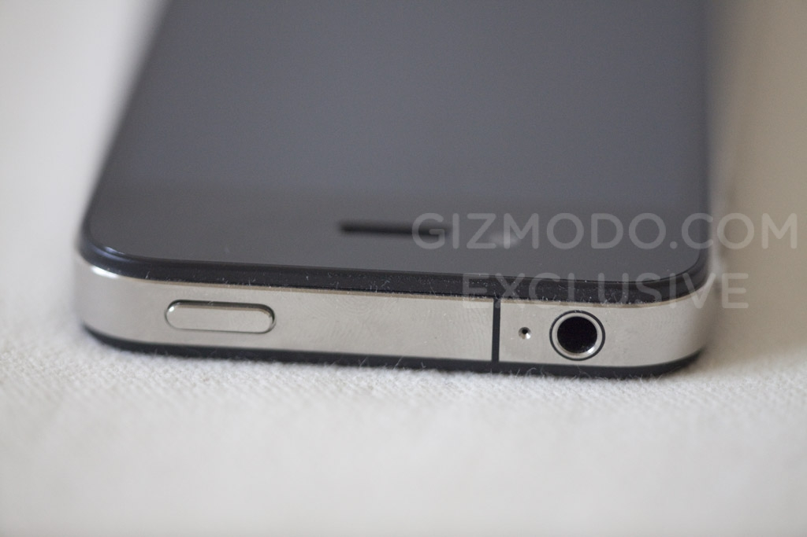

Dieter Rams - Inspiration Behind 4G iPhone Design
Yesterday Bobby Solomon of Kitsune Noir pointed out several references supporting the Dieter Rams design inspiration for the 4G iPhone design. Dieter Rams is a German industrial designer that helped shape Functionalist style of consumer electronics for Braun and other electronics companies during the 1960’s. The key principal of the Functionalist school of design is that the design should be created based on the purpose of the product or architecture.
Rams once explained his design approach in the phrase “Weniger, aber besser" which freely translates as “Less, but better."
For quite some time now it has been said that Apple’s industrial designer Jonathan Ive has been influenced by Rams’ design, and in the case of the 4G iPhone this is quite apparent.